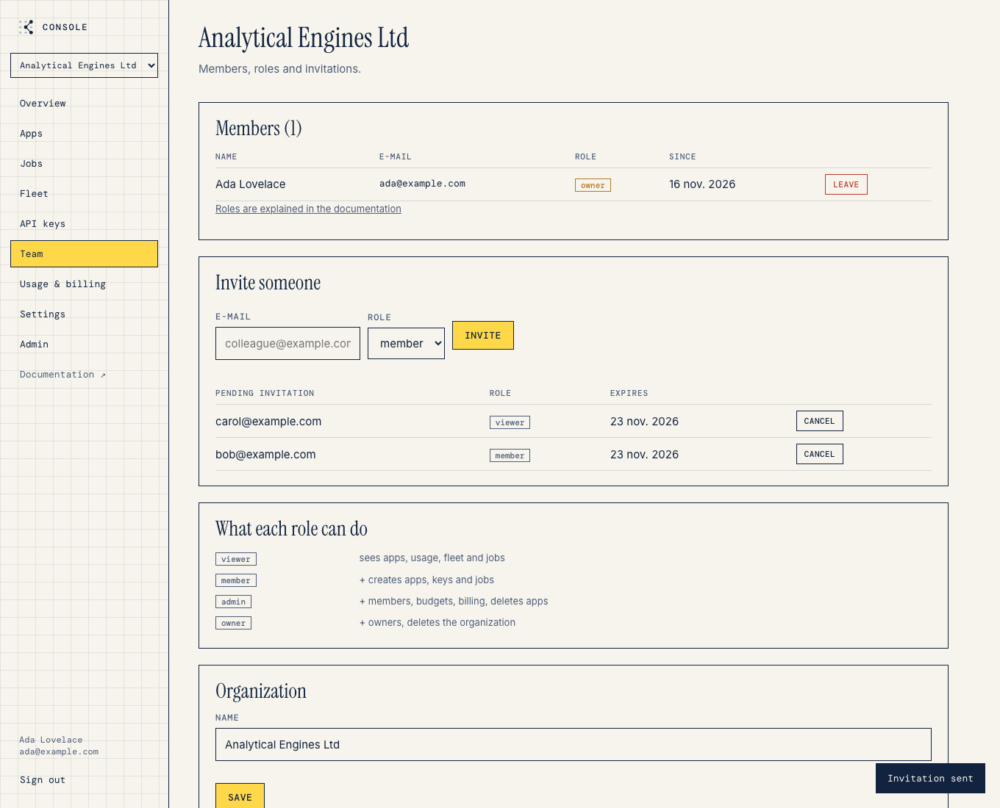
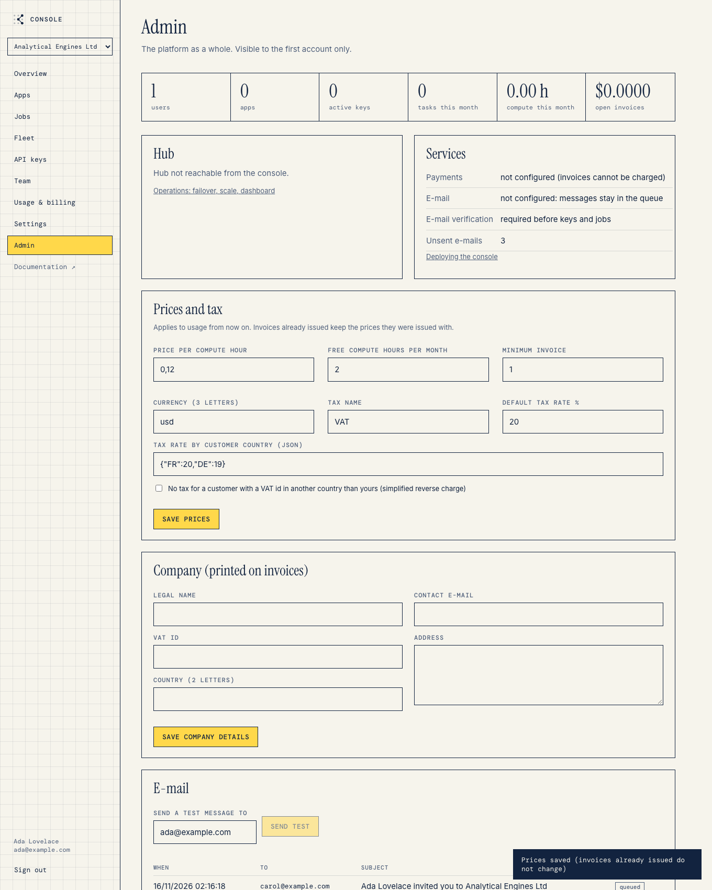

Console et comptes
Créer un compte, des apps liées à l'infrastructure, des clés d'API, envoyer des jobs, suivre l'usage, payer ce qu'on consomme.
Les cinq étapes
- Créer un compte (e-mail et mot de passe). Une allocation gratuite mensuelle est incluse.
- Créer une app depuis la Vue d'ensemble (Overview). Une app est un projet : son propre identifiant de locataire sur la flotte, ses clés, son usage et un budget mensuel facultatif.
- Créer une clé d'API : une clé client envoie du travail et lit les résultats ; une clé nœud permet à une machine de rejoindre la flotte. La clé n'est affichée qu'une fois.
- Connecter une machine :
spatial agent --hub HUB --token-file node.tok. Elle apparaît dans Fleet en quelques secondes. - Lancer un job depuis Jobs (ou
spatial fleet submitavec une clé client). L'usage est mesuré par tâche terminée et facturé chaque mois.
L'Overview affiche ces étapes comme une liste de contrôle et les coche d'après ce qui existe réellement sur le hub.
La console, page par page
| Page | À quoi elle sert |
|---|---|
| Overview | La liste de contrôle, apps, clés actives, nœuds en ligne, tâches et calcul du mois, charge estimée |
| Apps | Une page par app avec onglets : Overview (graphique d'usage, tâches récentes), Keys, Connect (extraits CLI et Python avec l'adresse de votre hub), Jobs, Settings (nom, budget, suppression) |
| Jobs | Soumettre une des charges autorisées du hub avec ses paramètres, suivre les jobs en file, en cours et terminés |
| Fleet | Les machines qui ont rejoint avec vos clés nœud (état, cœurs, CPU, RAM), compteurs de la file, comment ajouter une machine |
| API keys | Tous les identifiants de hub de vos apps ; créer, copier une fois, révoquer |
| Team | Membres, rôles, invitations et nom de l'organisation ; le sélecteur en haut de la barre latérale change d'organisation |
| Usage & billing | Le mois par app, allocation gratuite, prix par heure de calcul, taxe, factures numérotées avec PDF, paiement, coordonnées de facturation (admins et propriétaires) |
| Settings | Profile, Security (double authentification, mot de passe, sessions actives), Account tokens pour l'API REST, Activity, Data (export, suppression du compte) |
| Admin | Premier compte seulement : utilisateurs, totaux de la plateforme, état du hub, prix et taxe, coordonnées de la société pour les factures, état et test de l'e-mail, file des messages |
Équipes et rôles
Tout (apps, clés, jobs, usage, factures) appartient à une organisation. Chaque compte a un espace personnel à un seul membre ; créez une organisation pour travailler à plusieurs et invitez par e-mail (l'invitation vaut pour une adresse, à usage unique, valable sept jours).
| Rôle | Peut |
|---|---|
| viewer | Voir apps, usage, flotte et jobs |
| member | + créer apps, clés d'API et jobs ; renommer les apps |
| admin | + inviter et retirer des membres, fixer les budgets, supprimer des apps, voir la facturation, payer, modifier les coordonnées |
| owner | + nommer des propriétaires, supprimer l'organisation. Il reste toujours au moins un propriétaire |
Derrière les quatre rôles intégrés il y a des permissions (apps.write, apps.delete, apps.budget, keys.write, jobs.submit, billing.read, billing.pay, org.manage, members.manage ; org.delete et members.owner restent aux propriétaires). Sur la page Team, vous pouvez définir jusqu'à dix rôles personnalisés (par exemple un billing-clerk qui voit les factures et les paie mais ne touche pas aux apps). Une règle ferme la faille d'escalade : personne ne peut créer ni attribuer un rôle contenant une permission qu'il ne détient pas lui-même.





Clés d'API et jetons de compte : deux choses différentes
| Clé d'API | Jeton de compte | |
|---|---|---|
| Sert avec | Le hub (SWP/2) : spatial agent, spatial fleet, tout client | L'API REST de la console (référence) : scripts qui créent apps et clés, lisent l'usage |
| Ressemble à | spc1.…~… (un identifiant de hub à portée limitée nommé app7:k3) | spt_… |
| Portées | client : fleet:submit, fleet:read. nœud : fleet:report, fleet:work | read (GET seulement) ou write |
| Affichage | Une fois, à la création ; seuls les 4 derniers caractères sont gardés | Une fois ; seul un hachage est gardé |
| Révocation | Immédiate, sur le hub en marche (fichier de noms révoqués relu) | Immédiate |
Comment c'est relié à l'infrastructure
| Dans la console | Sur le hub |
|---|---|
| Une app | Le locataire app7 : équité, file et quotas s'appliquent à lui |
| Une clé | Un identifiant app7:k3 signé avec la clé maîtresse du hub |
| Une machine dans Fleet | Un nœud dont l'identité est sa clé nœud |
| Un job | Une tâche soumise avec un identifiant client de courte durée de l'app |
| L'usage | Une ligne par tâche terminée dans le fichier d'usage du hub, lu au fil de l'eau |
Sécurité du compte
- Mots de passe hachés avec scrypt ; même message et même travail pour un compte inconnu ou connu ; cinq mots de passe faux verrouillent le compte 15 minutes ; inscriptions, connexions, réinitialisations et appels d'API sont limités en fréquence (600 requêtes par minute et par utilisateur, 120 par jeton).
- Double authentification (Settings, Security) : un code d'une application d'authentification (TOTP, RFC 6238) après le mot de passe ; huit codes de secours à usage unique affichés une fois ; un code ne sert qu'une fois ; cinq essais par tentative de connexion ; la désactiver exige le mot de passe et un code et ferme toutes les sessions.
- Vérification de l'e-mail : les nouveaux comptes reçoivent un lien ; quand le serveur peut envoyer des e-mails, clés d'API, jobs et organisations exigent une adresse vérifiée (le compte opérateur est exempté). Sans SMTP, ce n'est pas imposé, car personne ne pourrait vérifier.
- Sessions : cookie HttpOnly, SameSite=Strict (Secure derrière TLS), jeton CSRF et contrôle de même origine à chaque changement ; lister et fermer des sessions ; changer le mot de passe ferme les autres. Les jetons sont des identifiants porteurs sans cookie, donc sans CSRF ; un jeton ne peut ni créer de jeton, ni changer le mot de passe, ni supprimer le compte.
- Isolation : un utilisateur ne voit que les organisations dont il est membre ; demander les données d'une autre donne la même réponse que pour quelque chose d'inexistant. Politique de sécurité de contenu stricte : ni script ni style en ligne.
- Écoute sur 127.0.0.1 sauf autorisation explicite : mettez TLS devant (le fichier compose utilise Caddy).
Connexion unique (SSO)
Si l'opérateur configure un fournisseur OpenID Connect (Google, Microsoft Entra, Okta, Keycloak… ; --oidc-issuer, --oidc-client-id, OIDC_CLIENT_SECRET), la page de connexion affiche Sign in with …. Le flux est le code d'autorisation avec PKCE ; le jeton d'identité est vérifié ici (signature RS256 contre les clés du fournisseur, émetteur, audience, expiration, nonce, e-mail confirmé), l'état est à usage unique et expire en dix minutes, et l'opérateur peut limiter à certains domaines d'e-mail ou aux comptes existants. Un utilisateur qui a activé la double authentification doit toujours donner le code. SAML n'est volontairement pas intégré : placez un courtier OpenID Connect (Dex, Keycloak) devant votre fournisseur SAML. Ce flux est testé contre un vrai fournisseur (Dex).
Facturation, taxe et factures
L'opérateur fixe les prix dans Admin (prix par heure de calcul, allocation gratuite mensuelle, facture minimale, devise) et la taxe (un taux par défaut, des taux par pays du client, une autoliquidation simplifiée facultative pour un client avec un numéro de TVA à l'étranger). Les prix s'appliquent à partir de là ; les factures déjà émises gardent les prix avec lesquels elles ont été émises. Les organisations saisissent leurs coordonnées de facturation (nom, adresse, pays, numéro de TVA) : un numéro de TVA est vérifié pour le format (UE, Royaume-Uni, Suisse, Norvège) et pour la clé de contrôle là où l'algorithme est public (AT, BE, DE, DK, FR, IT, PL, PT), et facultativement auprès du service VIES de la Commission européenne ; la console indique quelle vérification a réussi. L'opérateur peut émettre des avoirs (numérotés CN-2026-00001, avec PDF, taxe créditée au taux de la facture) : une facture impayée diminue ; pour une facture payée, le remboursement passe par Stripe quand le paiement est connu, sinon l'avoir est marqué remboursement dû. Admin signale ce qui manque avant de facturer (nom de société, adresse, numéro de TVA, pays). À la fin d'un mois avec usage, une facture est créée avec un numéro sans trou (INV-2026-00001), sous-total, taxe et total, téléchargeable en PDF ; les montants sous le minimum sont annulés et n'ont pas de numéro. Le paiement passe par Stripe Checkout quand STRIPE_SECRET_KEY est défini, et une facture n'est marquée payée que par le webhook signé de Stripe ; sans Stripe, la console affiche les factures et refuse de débiter.
Tant que l'opérateur n'a pas enregistré de vrais prix, la console dit clairement qu'elle utilise des prix d'exemple.
Les messages (vérification, invitations, réinitialisation) passent par une file : remis par SMTP (--smtp-host, STARTTLS ou TLS implicite) et réessayés avec des délais croissants quand le serveur est en panne ; sans SMTP ils restent visibles dans Admin. Admin a un bouton de message de test.
Lancer et déployer
En local : spatial platform serve (voir le panneau). Sur un serveur : docker compose --env-file deploy/.env up -d --build démarre le hub, la console et HTTPS automatique (docs/DEPLOY.md).